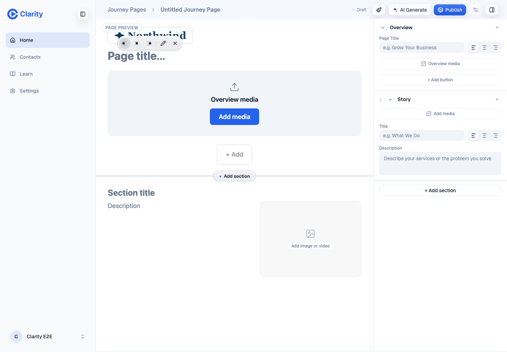
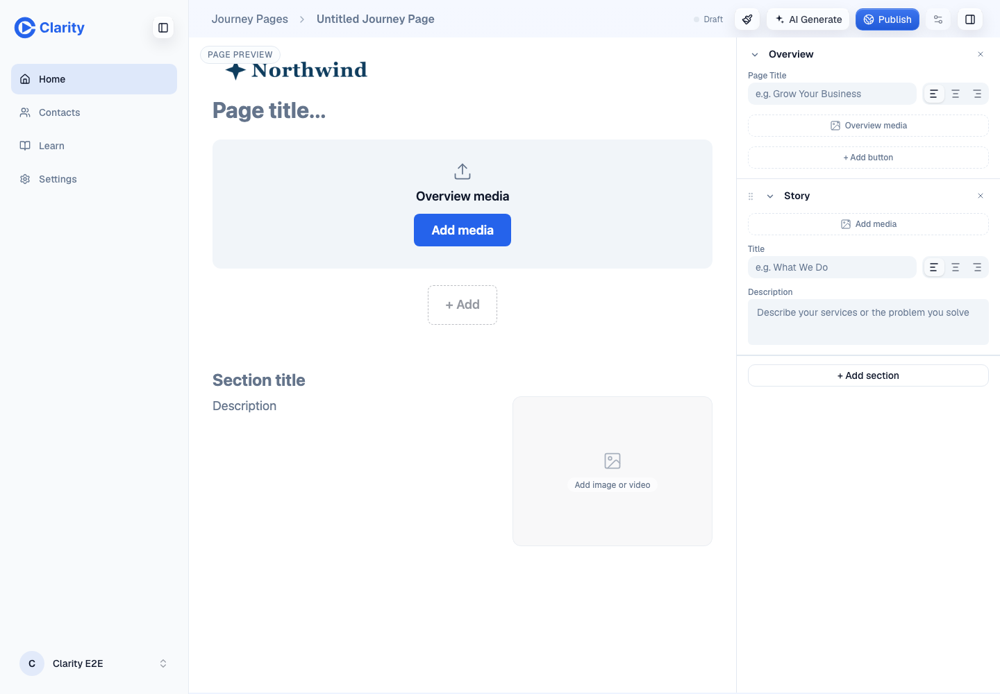
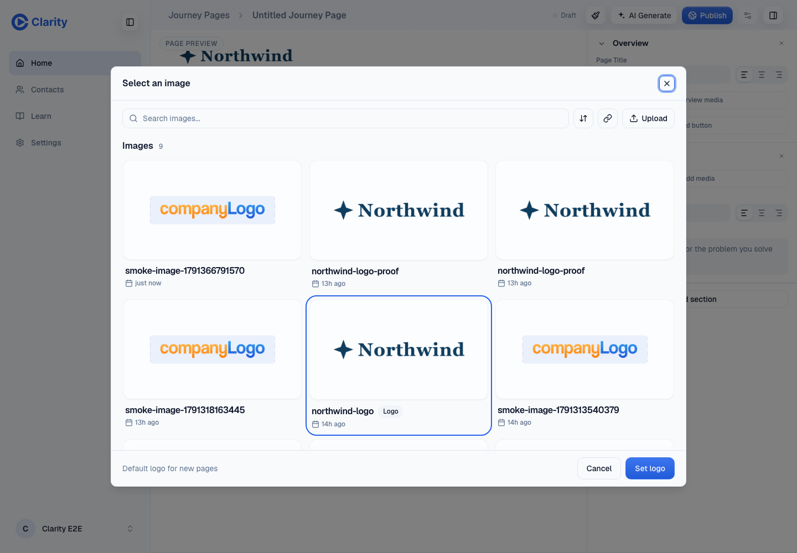
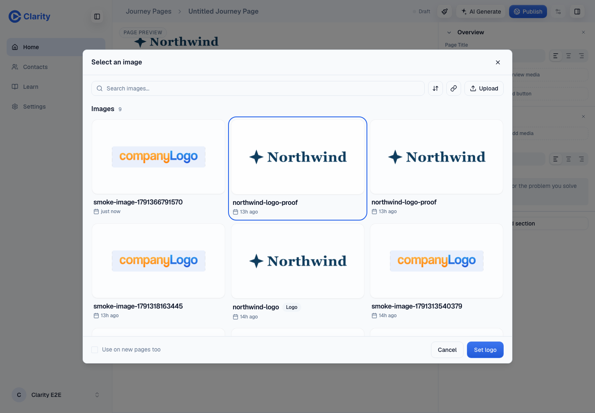
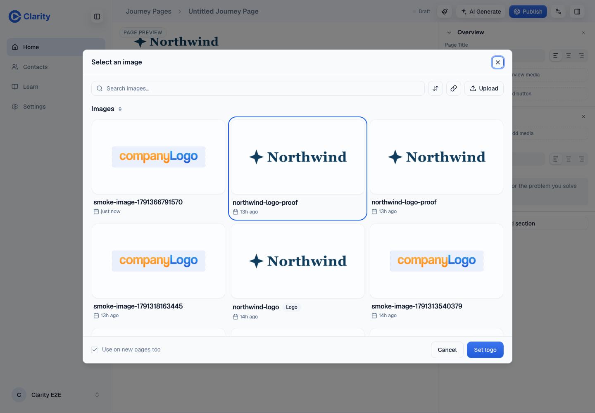

VERIFIED on the PR #1033 preview at commit 1b815542a282f4b5d15060a1f019d76a204516ea. October 7, 2026. Screenshots use mock QA data.
Edit opened the picker during mousedown. Its backdrop intercepted the release, so the resulting outside click closed it. Opening on click resolves that sequence. Main at 2006da6f6 has the same bug, reproduced with its editor code and read-only preview data.





The QA default was restored and the scratch page deleted. No production changes. Follow-up: move the preview label and hover toolbar away from the logo. William's exact page returns Forbidden for the QA account; the same flow ran on a QA page.
No browser page errors occurred during final verification. The authenticated doctor confirmed the preview head and session. An independent browser check confirmed the loaded picker, Cancel and reopen.